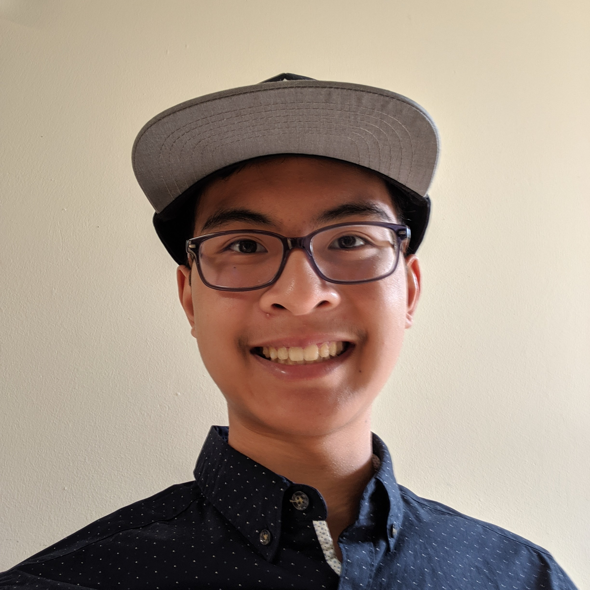

Hello, Yello! :D
I'm Quinn, an incoming masters student at Northeastern University (MS in Computer Science). I'm an aspiring graphics programmer; I love math, I love
computer science, and computer graphics has both of these in spades along with an innate tangibility unlike other fields. Outside of my career interests, I
enjoy gaming, writing, and reading. I'm also dabbling in creating pixel art. My online handle is often Cubostar, so sometimes I
go by Cubostar or Cubo for short.
I hope you have fun exploring my website and all of the things it has to offer! If you want to contact me, please do so at: quinn [dot] arbolante
[at] gmail [dot] com
